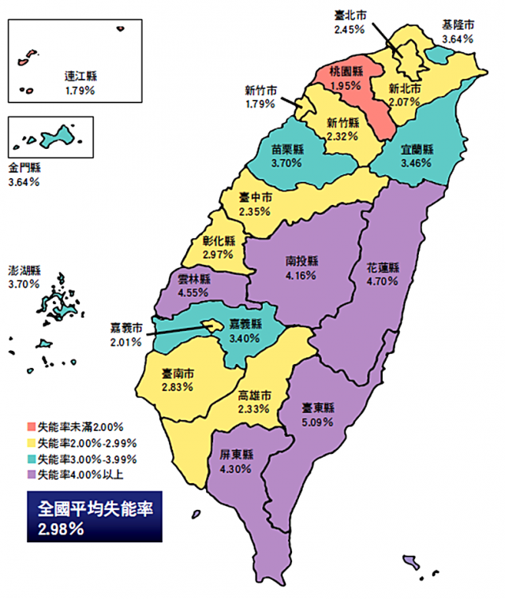
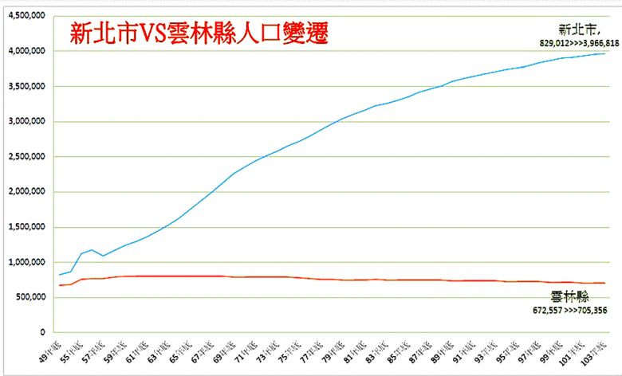

簡介
虎尾科大坐落於臺灣的農業大縣 - 雲林，當地的花生產量佔了全臺8成之多。而在這農業人口逐漸高齡化與減少的趨勢下，我們想若有一套能優化、維護農作物生長過程的系統的話， 想必能為農民們帶來幫助。
我們藉由無人機 (空拍端)、自製的側拍平台(側拍端)與影像辨識結合的技術來建立能偵測「花生葉病蟲害」的影像辨識模型，協助監測花生農作物的生長品質並減省需要下田巡視的時間與人力。

上圖可以發現農業縣市的失能率相對的高出了許多。
人口外流嚴重加上少子化影響導致鄉村勞動力下降。